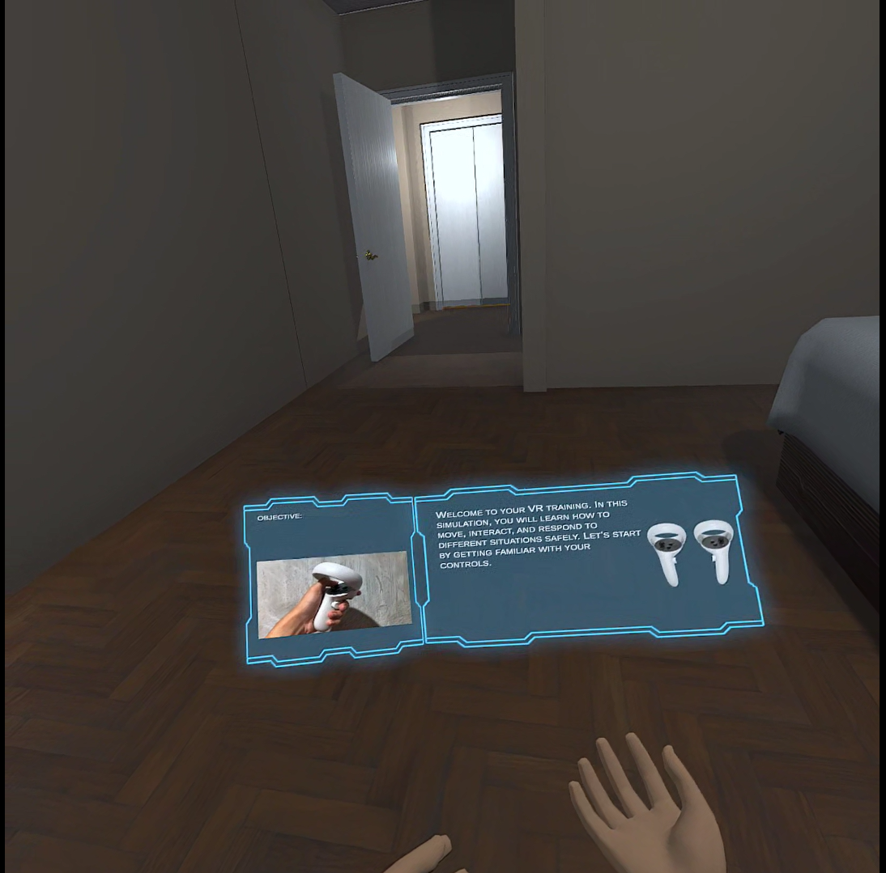

An immersive Unity-based VR application designed to teach students how to respond during campus disasters.
UnityC#VR3D Simulation
Project Overview
This project focuses on disaster preparedness by simulating real-life emergency scenarios inside a virtual
representation of a school campus. The goal is to help students understand proper responses during disasters
such as fires, earthquakes, floods, and typhoons in a safe and interactive environment.
Key Features
Interactive VR campus navigation
Disaster scenarios: fire, earthquake, flood, and typhoon
Guided instructions with subtitles and visual cues
Wayfinding system with directional arrows
Realistic 3D environment based on school campus
Project Gallery

Technology Stack
Unity Engine (3D)
C# scripting
VR Interaction Toolkit
3D modeling and scene optimization
My Role
I designed the overall system flow, implemented the VR interactions, created disaster scenarios,
and integrated the wayfinding system. I also handled UI elements, subtitles, and user guidance
to ensure clarity during simulations.
Challenges & Solutions
Optimizing performance for VR – solved by reducing polygon counts and using baked lighting
Guiding users without overwhelming them – implemented visual arrows and step-by-step prompts
Maintaining realism while ensuring safety – used controlled simulations instead of intense effects
What I Learned
VR interaction design principles
Unity optimization techniques
Creating educational simulations using game engines
Interested in this project?
Feel free to contact me if you want a demo, walkthrough, or more technical details.